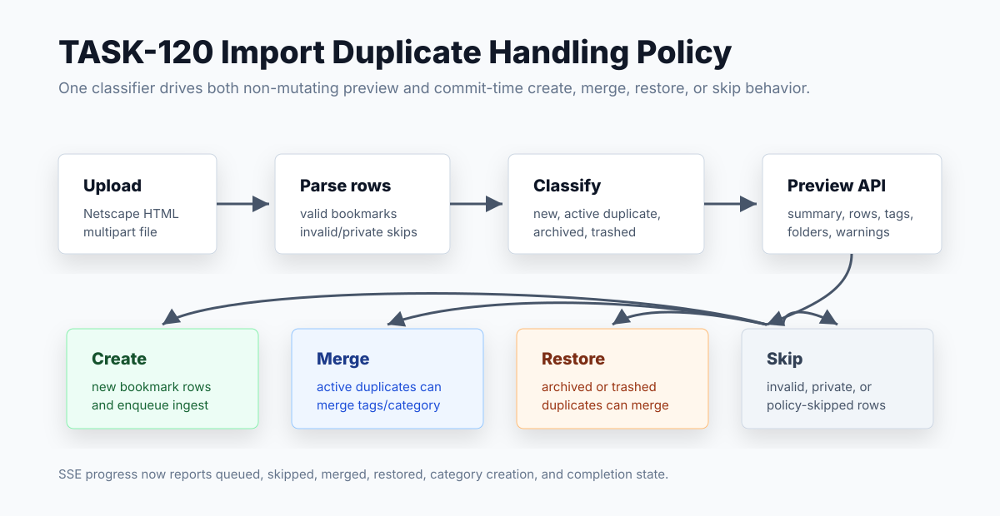

Little Imp Task Report
Import Duplicate Handling Policy

Before
Browser import committed immediately. Active duplicates were skipped, archived duplicates could fall into unique-constraint failures, invalid/private URLs were only parser warnings, and the frontend had no typed preview helper or merge/restore policy field.
Problem
TASK-108 needs a pre-import review screen, but the daemon first needed stable duplicate semantics that classify active, archived, trashed, new, invalid, and private rows without mutating data.
Changes Added
- Added
POST /import/previewfor non-mutating row classification with summary counts, detected folders, tags, warnings, and per-row actions. - Added a conservative duplicate policy: active duplicates skip by default, active duplicates can merge tags, category, and notes, and archived/trashed duplicates can restore plus merge when selected.
- Handled repeated new URLs inside the same source file as duplicate rows so imports skip or merge them instead of attempting duplicate inserts.
- Updated commit-time import to apply the same classifier and report
queued,skipped,merged, andrestoredover SSE progress. - Regenerated API docs, OpenAPI, and shared contract JSON, then added typed frontend API helpers for preview and duplicate-policy commit fields.
Result
TASK-120 now provides the policy foundation for TASK-108. Import review can call the preview endpoint, display duplicate classes and estimates, then commit the exact selected policy without re-defining duplicate behavior in the UI.
Verification
bun test daemon/src/test/integration/import.test.tspassed.npm run test:daemonpassed: 428 daemon tests.npm run testpassed: 239 frontend/script tests.npm run lintpassed with existing Fast Refresh warnings only.npm run type-checkandnpm run docs:api:checkpassed.npm run buildpassed with existing Browserslist/chunk-size warnings only.git diff --checkpassed.
Implementation Notes
The Netscape parser now keeps skipped row metadata for malformed, non-http, missing-href, and private URL cases. It also imports note-like metadata from description attributes and following <DD> lines. The route-level analyzer resolves existing bookmarks in bulk, computes preview estimates from the selected duplicate policy, classifies repeated source URLs, and feeds the same analyzed rows into commit processing.
Merge behavior preserves the existing bookmark row while unioning tags, applying imported folder category metadata, and appending imported notes when available. Restore-merge clears archive/trash flags before returning the row to the active library.
Files Changed
daemon/src/routes/import.tsdaemon/src/import/netscape-parser.tsdaemon/src/db/bookmark-repository.tsdaemon/src/api/contract.tsdaemon/src/api/types.tssrc/lib/api.tssrc/components/ImportDialog.tsxdaemon/src/test/integration/import.test.tssrc/lib/api.test.tsAPI.md,docs/api-contract.json,docs/openapi.json
Follow-ups
TASK-108 should build the actual pre-import review UI on top of this preview and duplicate-policy contract. TASK-109 can add category/tag remapping before commit, and TASK-110 can layer a richer post-import result report over the same row/action model.